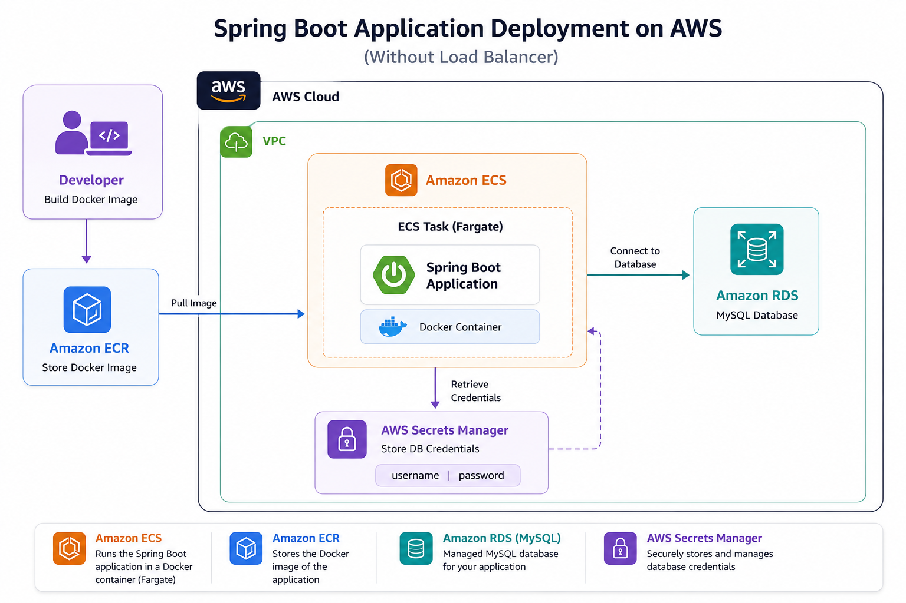

Springboot (CRUD) on ECS Fargate
A simple springboot application with CRUD operations
deployed in ECS Fargate.The data from springboot application is persisted
in RDS database.
Architecture

Key Features
- Springboot Application.
- ECR for storing the dokerized image.
- RDS database for storing data.
- Secrets for storing database credentials.
- Configuring security groups.
Challenges Solved
- The ecs task stopped immediately after launch.Used Cloud watch to debug and resolve.
- Security Groups configuration was bit challenging.